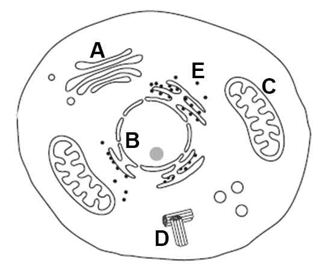

문제 3
다음은 동물 세포의 그림이다.

단계1. C 세포소기관의 주된 역할은 세포호흡에 관여하는 것이다. C 기관과 같은 인지질 구조를 가진 기관은 어느 것인가? 또 세포호흡 과정 중 C기관에서 일어나는 과정 무엇인가?
단계2. 위 그림에서 A~E중 세균에서 발견되는 것은 무엇인지 말하고 역할에 대한 설명하시오?
단계3. 세균은 C 기관을 가지고 있지 않지만, 세포호흡을 통해 에너지를 합성 할 수 있다. 세균에서 C기관을 대체할 수 있는 장소를 예상해보고, 세균이 가지고 있는 세포구조적 특징면에서 그 이유를 예상해 보고 설명하시오.